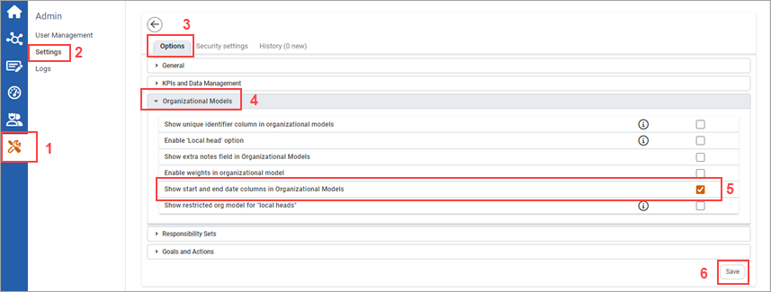

Users can input start and end dates of organizational units such as subsidiaries, investee companies, or suppliers with regards to quantitative KPIs. This can affect the weight of an organizational unit on a company based on the duration that an organizational unit is with a company.

| 1 | Click Admin. |
| 2 | Click Settings. |
| 3 | Ensure that you are on the Options tab . |
| 4 | Open the Organizational Models settings. |
| 5 | Select the Show start and end date columns in Organizational Models checkbox. |
| 6 | Click Save. |
Once the start and end dates have been enabled, adjustments can be made to the parameters of the start and end dates (see Adjusting Parameters of the Start and End Date of an Organizational Unit).